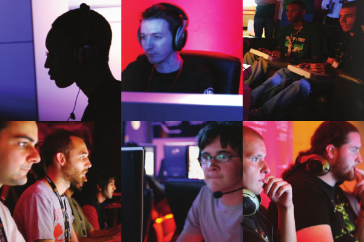
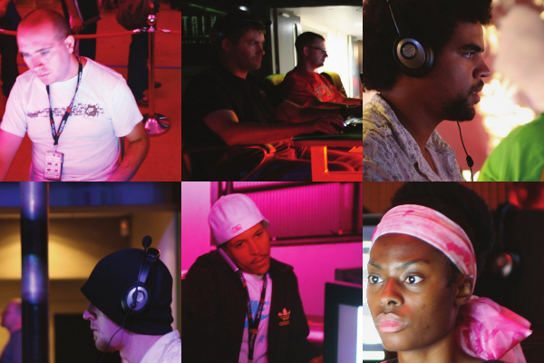

These are images from a new photobook, Gameface, by Studio Kinglux.

It's always a little disturbing being confronted with what exactly we look like when we (gamers) play most single player, non-motion controlled games.
There's always something of a disconnect between the heightened mental stimulation and engagement we feel, and...

...the look of blank boredom that we actually physically express, despite obvious concentration.
The zombie look that dominates the gamer's countenance never does justice to the mental engagement that is happening beneath the surface.
It makes what has been accomplished with Wii, the potential of Sony's "Arc", Rock Band et al, and of course Natal seem even more appealing in comparison ... despite the fact that the potential of more physical inputs has been shown so far to have many, many more limitations when it comes to pure gameplay - i.e. potential of mental engagement.
Can we have games that engage us equally mentally and physically? Or is the zombie look an expression of the necessity of heightened mental engagement of these kinds of games? Is same-screen social gaming - good ol' trash talking in one-on-one beat 'em ups, for example - the middle ground? Is it Alternate Reality Gaming? Is it somehow finding a way to bring increased gameplay sophistication to physical input games?